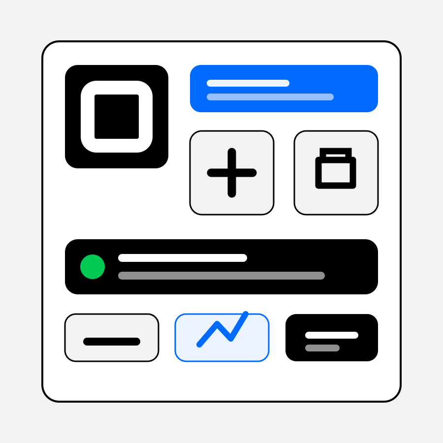

Enterprise merchant fluency
I have managed strategic merchant relationships where payment acceptance, transaction data, eCommerce rollout and operational workflow all sat inside the commercial case.
Enterprise Account Executive, Australia
I understand the commercial and operational friction sitting inside enterprise merchant payment flows: POS, online conversion, reporting, cashflow, account growth and customer experience. Square is the right next move because it brings those problems into one seller ecosystem.

Why Square
I want my next role to put me closer to the enterprise conversations that create revenue. Square excites me because it is growing enormously whilst still commercially ambitious. Most importantly it is built around the merchant solutions that I understand: payments, POS integration, ecommerce, cashflow, reporting and operational complexities.
My strongest experience is Tyro Payments. The best merchant conversations were never just about rates or terminals. They were about missed revenue, payment flow, online conversion, service pressure, cashflow, and whether the payment layer helped the business grow.
Role fit
I have managed strategic merchant relationships where payment acceptance, transaction data, eCommerce rollout and operational workflow all sat inside the commercial case.
I know how to speak with operators about what payment friction actually costs: slower service, missed online conversion, disconnected reporting and weaker customer experience.
I am moving toward a focused enterprise IC role because I want ownership of the commercial conversation, the pipeline and the number at a high-growth payments company.
Leading Customer Success has sharpened how I qualify deals: I understand what makes revenue expand, renew and survive beyond the first signature.
Relevant experience
Managed strategic merchant relationships across Tyro Top 100 merchants in retail, hospitality and eCommerce, accountable for $1.2bn transaction volume and $20m revenue across 20 major accounts.
Led CS operations across GBP 1.33m ARR and 127 accounts, including enterprise customers, renewals, QBR cadence, customer health, reporting and expansion.
Owned global account relationships with operators and municipalities, translating customer needs into product and technical priorities while improving onboarding and growth motions.
Helped build the enterprise sales motion for a public-sector procurement analytics and AI platform, establishing CRM process, pipeline structure and QBR frameworks.
Developed relationships with traders and investors, using education, reports, Salesforce and Introducing Broker relationships to access larger overseas revenue streams.
Sales motion
I would start with the operator's reality: where they sell, how they get paid, what slows the team down and what they cannot see clearly enough in the data. Then I would position Square as the connected system that helps them sell, operate and grow with less drag.
Operating style
Enterprise buyers still need the problem explained cleanly: what is broken, why it matters and what changes.
I have already had the merchant conversations where payments, workflow and growth sit inside one decision.
I know how to create commercial conversations through partners, referrals, LinkedIn and customer insight.
My CS leadership background means I care whether a deal becomes adoption, expansion and retention.
Let's talk
Enterprise Account Executive candidate, Australia